Public Service,
Internet Language
Serviço público,
linguagem de internet
Public communication for Santa Maria City Hall, rebuilt from the inside with the Agência CENTRO team: a stiff, ignored government account turned into a social media presence people from across Brazil follow by choice. A comunicação pública da Prefeitura de Santa Maria, refeita por dentro com o time da Agência CENTRO: uma conta institucional engessada e ignorada virou uma presença nas redes que gente do Brasil inteiro segue porque quer.


The 30-second version A versão de 30 segundos
ProblemProblema
A government feed nobody read. Formal, stiff, and ignored, until COVID-19 made reaching people urgent.Um perfil de governo que ninguém lia. Formal, engessado e ignorado, até a COVID-19 tornar urgente chegar nas pessoas.
SolutionSolução
Speak the internet's language. Memes and trends lead the communication. My part: art direction and design, from concept to post.Falar a língua da internet. Memes e tendências guiam a comunicação. Minha parte: direção de arte e design, do conceito ao post.
OutcomeResultado
Followed by choice, copied nationwide. City halls across Brazil went on to adopt the same playbook.Seguido por escolha, copiado pelo país. Prefeituras do Brasil inteiro passaram a adotar o mesmo repertório.
86.9K86,9 milFollowers · ≈31% of the city's 282K residentsSeguidores · ≈31% dos 282 mil habitantes
6.9M6,9 miViews · 90 days · 21% from non-followersVisualizações · 90 dias · 21% de não seguidores
176K176 milInteractions · 90 days · 84% from followersInterações · 90 dias · 84% de seguidores
3Industry awards for the workPrêmios do setor pelo trabalho
My part in a team effort Minha parte num trabalho de equipe
This account is a team effort at Agência CENTRO, and the work below belongs to that team. I joined in 2021 as a graphic designer and, since my promotion to Art Director in late 2023, I lead the account's art direction: spotting the trend, setting the visual angle, designing, and directing the team's pieces until they go live.
Esta conta é um trabalho de equipe da Agência CENTRO, e o que aparece abaixo é desse time. Entrei em 2021 como designer gráfico e, desde que fui promovido a Diretor de Arte no fim de 2023, conduzo a direção de arte da conta: garimpar a tendência, definir o ângulo visual, desenhar e dirigir as peças do time até irem pro ar.
A government that nobody listened to Um governo que ninguém escutava
Before Agência CENTRO took over, Santa Maria's official social media presence was exactly what you'd expect from a city government: formal, stiff, and completely ignored. The content followed a rigid institutional template (announcements announced, services listed, dates commemorated), but the city's residents had long stopped paying attention.
Antes da Agência CENTRO assumir, a presença oficial de Santa Maria nas redes sociais era exatamente o que você esperaria de um governo municipal: formal, engessada e completamente ignorada. O conteúdo seguia um modelo institucional rígido (anúncios anunciados, serviços listados, datas comemoradas), mas fazia tempo que os moradores tinham parado de prestar atenção.
Engagement was close to zero. Nobody followed, nobody shared, and nobody felt the city was talking with them: it only broadcast at them.
O engajamento era quase zero. Ninguém seguia, ninguém compartilhava, ninguém sentia que a cidade falava com as pessoas: ela só transmitia para as pessoas.
When the agency took over in 2021, the pandemic was still on, and the old script stopped being an option.
Quando a agência assumiu, em 2021, a pandemia ainda não tinha acabado, e o roteiro antigo deixou de ser opção.
Using the internet's language to reach people Usando a linguagem da internet para alcançar as pessoas
During the pandemic, with morale low and trust in institutions fragile, the official tone was doing more harm than good. The account needed another way in.
Durante a pandemia, com o ânimo da população baixo e a confiança nas instituições fragilizada, o tom oficial atrapalhava mais do que ajudava. A conta precisava de outra porta de entrada.
The team started experimenting with memes and internet culture to communicate COVID-19 guidelines. The memes had a job: to meet people where they already were, talk the way they talk, and make them stop scrolling.
O time começou a experimentar com memes e cultura da internet para comunicar as diretrizes da COVID-19. Os memes tinham um trabalho: encontrar as pessoas onde elas já estavam, falar do jeito que elas falam e fazê-las parar de rolar o feed.
It worked. And the reach jumped past the city: people from outside Santa Maria, from other states, started engaging with and sharing the posts. The account that nobody followed became one people sought out.
Funcionou. E o alcance passou da cidade: pessoas de fora de Santa Maria, de outros estados, começaram a engajar e compartilhar os posts. A conta que ninguém seguia virou uma que as pessoas procuravam.
What started as a pandemic experiment became the way the account works. The content expanded from COVID-19 to public works, service notices, and seasonal campaigns, always hunting for the trend, the cultural moment, the format that makes it feel native to the feed.
O que começou como experimento de pandemia virou o jeito de tocar a conta. O conteúdo foi da COVID-19 para obras públicas, avisos de serviço e campanhas sazonais, sempre garimpando a tendência, o momento cultural, o formato que faz tudo parecer nativo ao feed.
Phase 01: pandemic communication Fase 01: comunicação na pandemia
Meeting people during the hardest moments Encontrar as pessoas nos momentos mais difíceis
The first posts to break the mold came while the pandemic was still on, around vaccination and health guidelines. Humor and empathy replaced bureaucratic language, and people responded. Os primeiros posts a quebrar o molde vieram ainda na pandemia, em torno da vacinação e das orientações de saúde. Humor e empatia substituíram a linguagem burocrática, e as pessoas responderam.
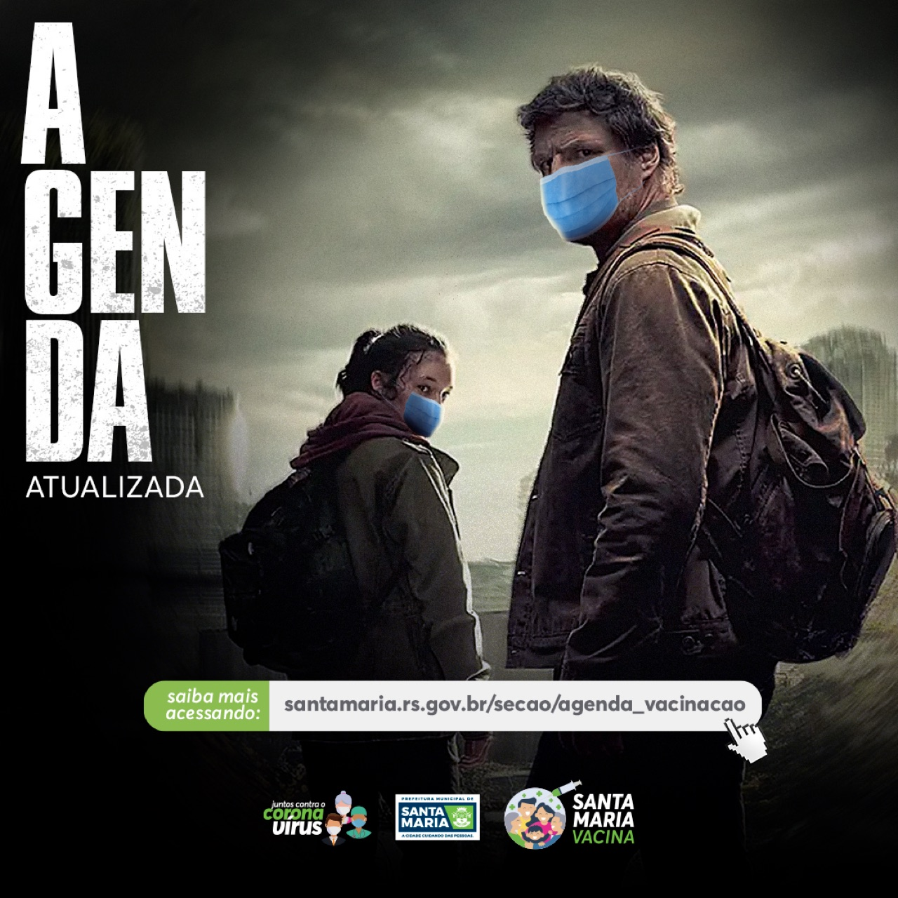
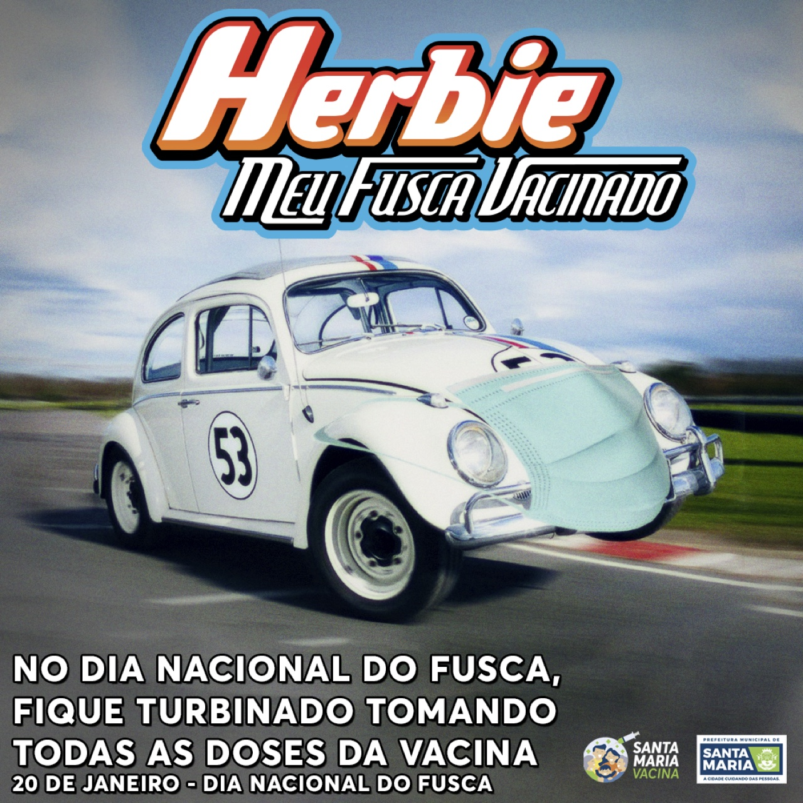
From exception to creative philosophy Da exceção à filosofia criativa
2021
Pandemic communication, the meme way
Comunicação na pandemia, do jeito meme
I joined the agency team as a graphic designer. With the pandemic still on, the team started using memes and humor for COVID-19 guidelines, then took the format to public works announcements ("Foca no trânsito", a seal pun), service notices, and civic campaigns. Posts began reaching people from across Brazil.
Entrei no time da agência como designer gráfico. Com a pandemia ainda em curso, o time começou a usar memes e humor nas orientações da COVID-19, e depois levou o formato para anúncios de obras públicas ("Foca no trânsito", um trocadilho com a foca), avisos de serviço e campanhas cívicas. Os posts passaram a alcançar gente do Brasil inteiro.
2022
Award-winning campaigns
Campanhas premiadas
The "Calourada" back-to-school campaign earned two industry awards. A federal Ouvidoria (ombudsman) campaign won a third. The approach was being recognized nationally.
A campanha de volta às aulas "Calourada" rendeu dois prêmios do setor. Uma campanha federal da Ouvidoria conquistou o terceiro. A abordagem estava sendo reconhecida nacionalmente.
2023
Taking over art direction
Assumindo a direção de arte
Promoted to Art Director, I took over the account's art direction, alongside leading the agency's design team.
Promovido a Diretor de Arte, assumi a direção de arte da conta, junto com a liderança do time de design da agência.
Today
Hoje
Trend-first content strategy
Estratégia de conteúdo guiada por tendências
Today the trend comes first: the team digs through internet culture for the right format and builds the communication on top of it. Santa Maria was one of the first city governments in Brazil to run this model, now copied across the country.
Hoje a tendência vem primeiro: o time garimpa a cultura da internet atrás do formato certo e constrói a comunicação em cima dele. Santa Maria foi um dos primeiros governos municipais do Brasil a rodar esse modelo, hoje copiado pelo país inteiro.
Phase 02: full campaign range Fase 02: amplitude de campanhas
Services, dates, awareness: nothing off-limits Serviços, datas, conscientização: nada fora do alcance
An internship call, a flu shot, a job fair, a marathon: the same voice, whatever the topic. Vaga de estágio, vacina da gripe, feirão de emprego, maratona: a mesma voz, seja qual for o assunto.
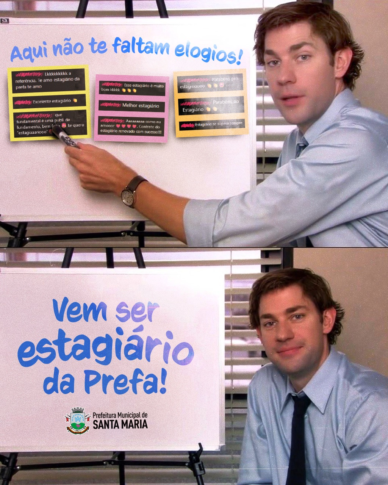
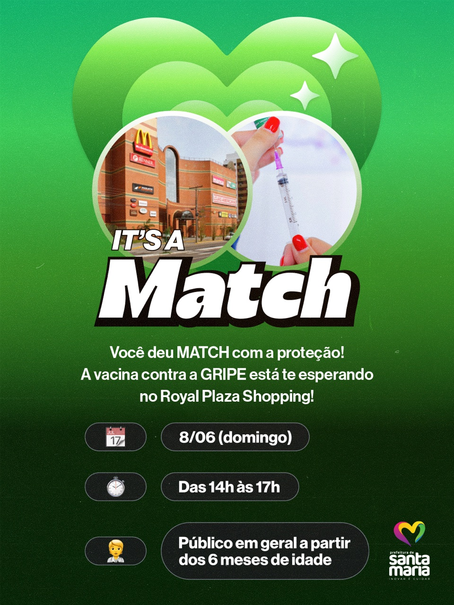
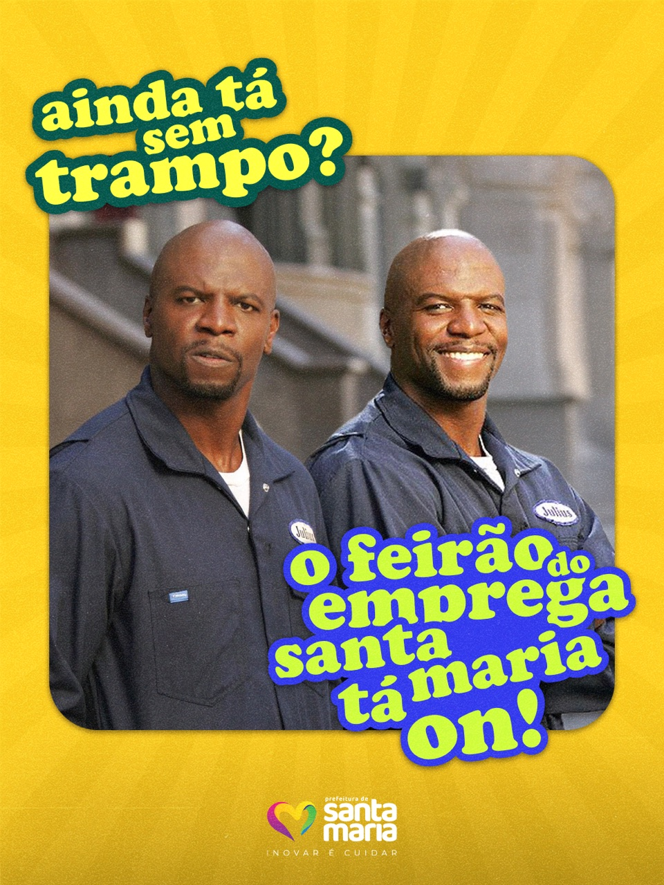
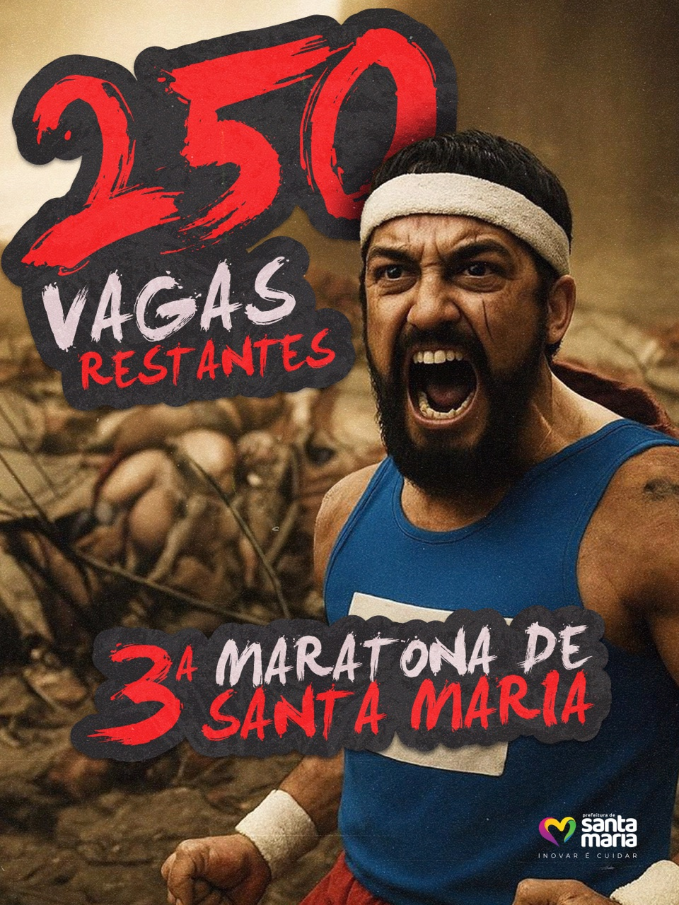
Three awards, one philosophy Três prêmios, uma filosofia
Beyond the engagement numbers, the work brought home three industry awards. Além dos números de engajamento, o trabalho rendeu três prêmios do setor.
Prêmio Boas Práticas da Gestão Pública Municipal
FAMURS · Calourada campaignFAMURS · Campanha Calourada
Industry recognition for the creative direction of the back-to-school Calourada campaign targeting university students in Santa Maria.
Reconhecimento do setor pela direção criativa da campanha de volta às aulas Calourada, voltada aos estudantes universitários de Santa Maria.
Prêmio ARI de Assessoria de Imprensa
ARI · Calourada campaignARI · Campanha Calourada
Second recognition for the same campaign, acknowledging both its creative execution and its measurable impact on public engagement.
Segundo reconhecimento da mesma campanha, considerando tanto a execução criativa quanto o impacto mensurável no engajamento público.
3ª Maratona de Defesa dos Direitos dos Usuários de Serviços Públicos
CGU · Ouvidoria campaignCGU · Campanha da Ouvidoria
National recognition for a federal government ombudsman campaign, bringing the same irreverent, human tone to a typically dry institutional subject.
Reconhecimento nacional por uma campanha federal de ouvidoria, levando o mesmo tom irreverente e humano para um assunto institucional tipicamente seco.
Phase 03: trend-first strategy Fase 03: estratégia guiada por tendências
The meme comes before the brief O meme vem antes do briefing
Today the format comes first: a trend, a game cover, a sitcom still, with the service message built on top. Hoje o formato vem primeiro: uma trend, uma capa de jogo, uma cena de série, e a mensagem de serviço vem por cima.
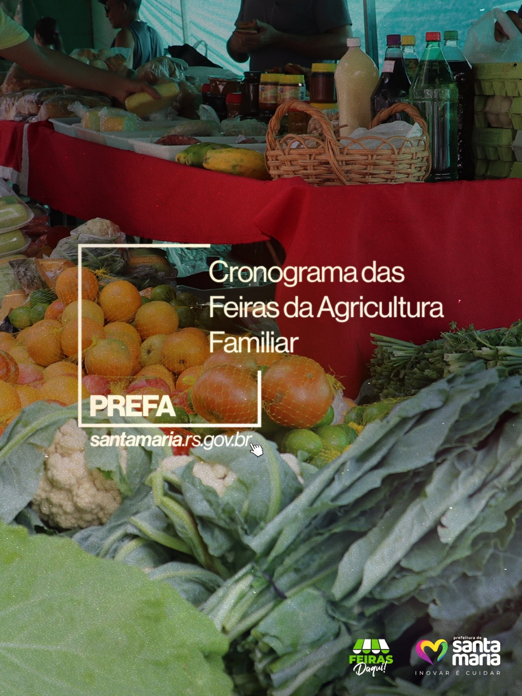
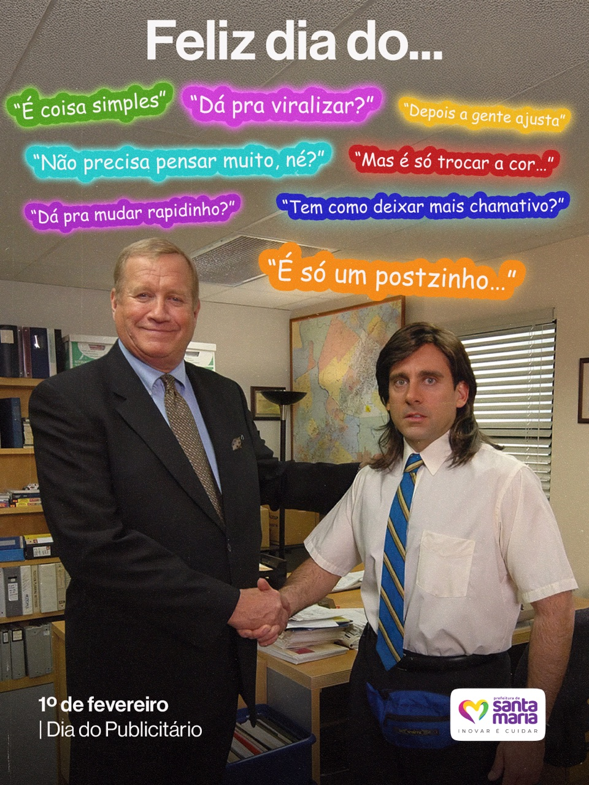
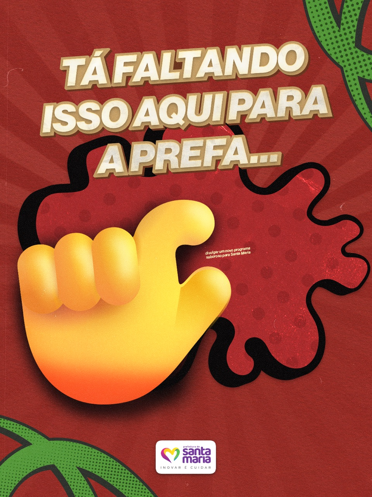
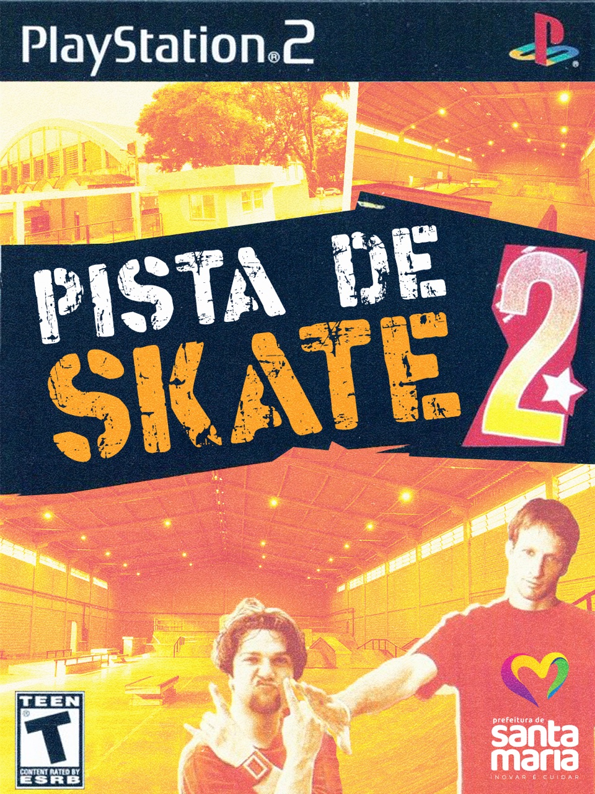
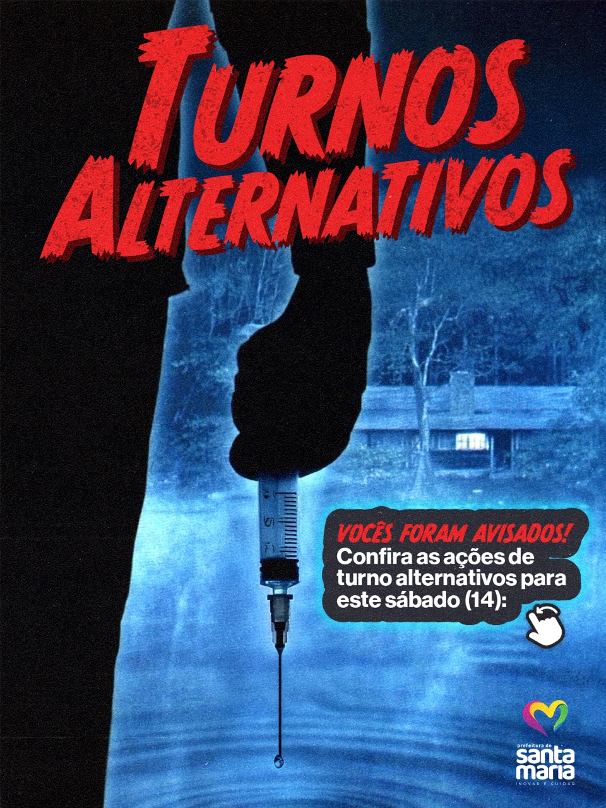
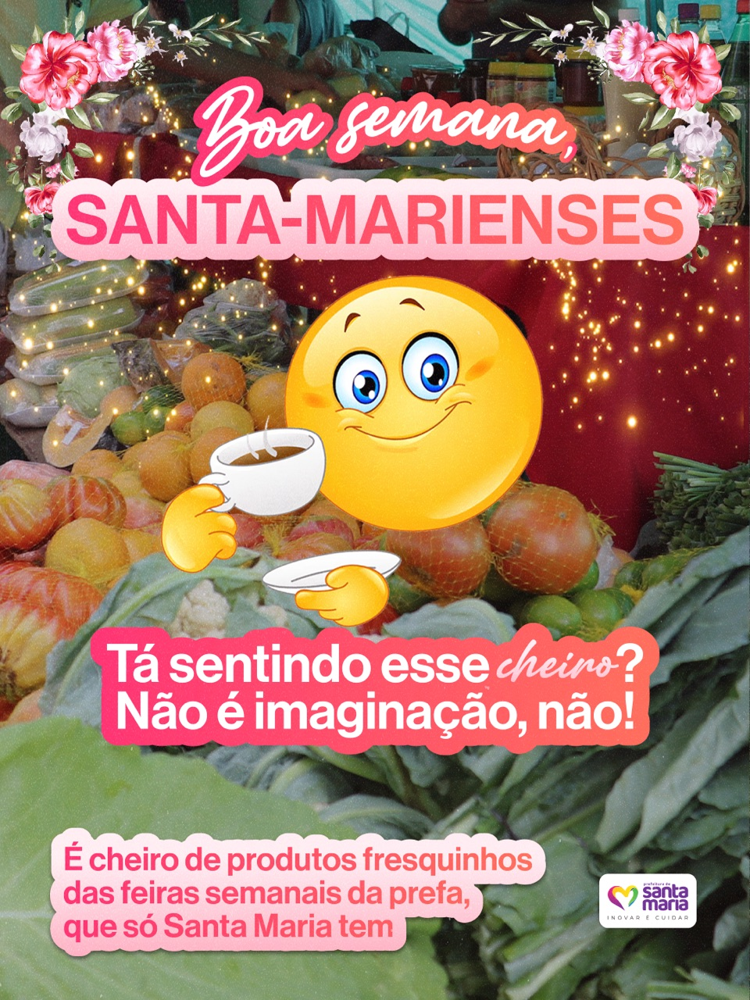
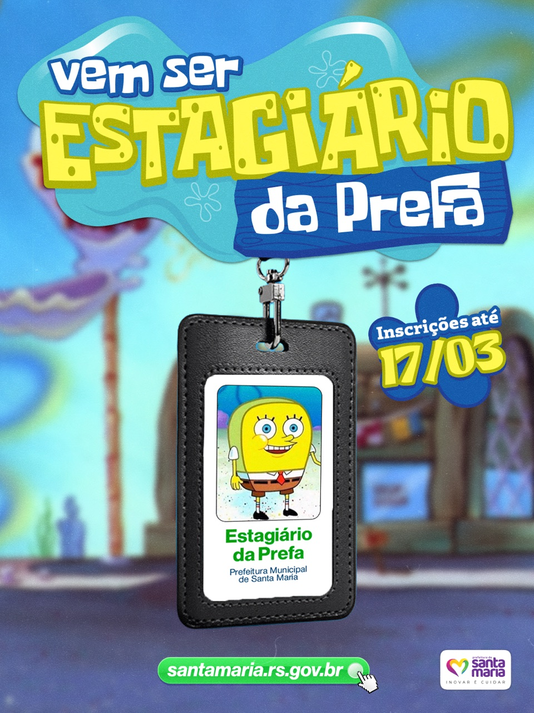
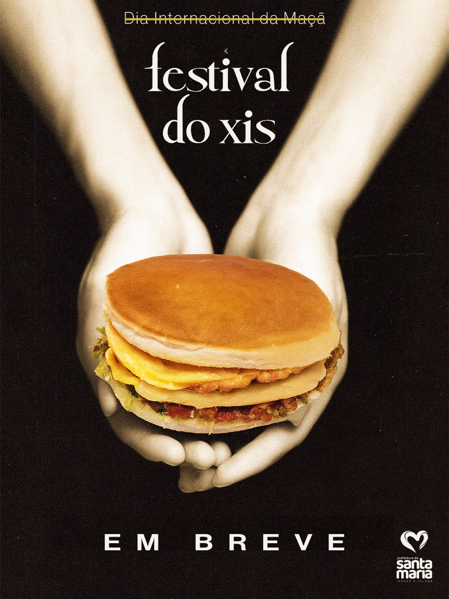
A model other city halls copied Um modelo que outras prefeituras copiaram
Santa Maria became one of the first municipal governments in Brazil to adopt meme-based, internet-native communication as a deliberate strategy: the core creative language for the official city account, sustained well beyond any one-off experiment.
Santa Maria se tornou um dos primeiros governos municipais do Brasil a adotar a comunicação baseada em memes e nativa da internet como estratégia deliberada: a linguagem criativa central da conta oficial da cidade, sustentada muito além de um experimento isolado.
The engagement shift was immediate: content that had been ignored for years started getting shared, commented on, discussed. And residents began to feel the city's communication was made for them, not issued to them.
A virada no engajamento foi imediata: conteúdo que vinha sendo ignorado por anos passou a ser compartilhado, comentado e discutido. E os moradores começaram a sentir que a comunicação da cidade era feita para eles, não protocolada para eles.
The model traveled beyond the city limits. City halls across Brazil started adopting similar approaches to their social media, and the playbook we wrote in Santa Maria kept showing up in other feeds.
O modelo viajou para além dos limites da cidade. Prefeituras de todo o Brasil começaram a adotar abordagens parecidas nas redes, e o repertório que construímos em Santa Maria passou a aparecer em outros feeds.
The biggest signal: people from outside Santa Maria (other cities, other states) started following and engaging with the account. A city hall got interesting to people who don't even live there, and there is no harder audience to win.
O maior sinal: pessoas de fora de Santa Maria (outras cidades, outros estados) começaram a seguir e engajar com a conta. Uma prefeitura ficou interessante para quem nem mora lá, e não existe público mais difícil de conquistar.
In the last 90 days the posts also reached 352K accounts, and a typical week still pulls ~490K views and ~11.5K interactions. Figures from Meta Business Suite; Instagram only exposes a trailing 90-day window, so they reflect recent performance rather than the account's full history. Nos últimos 90 dias os posts também alcançaram 352 mil contas, e uma semana típica ainda gera ~490 mil visualizações e ~11,5 mil interações. Dados do Meta Business Suite; o Instagram só libera uma janela móvel de 90 dias, então os números refletem o desempenho recente, e não o histórico completo da conta.
Want people to follow your feed by choice? Quer que sigam seu perfil por escolha?
Full-time, part-time, or freelance, remote included. Write me and I'll answer fast. Full-time, part-time ou freelance, remoto também. Me escreve que eu respondo rápido.